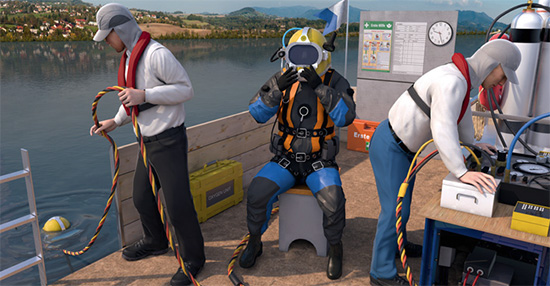

Gefährdungen
- Der Einsatz von Tauchern erfolgt im Rahmen von z. B. Bauarbeiten, Inspektions- und Wartungsarbeiten. Bei Taucherarbeiten können Personen ertrinken, durch Druckwechselerkrankungen und Sauerstoffüber- oder -unterversorgung geschädigt werden.
- Sie können durch Bauteile erfasst und getroffen werden.
- Durch Lärm, schnelle Druckwechsel oder mangelnde Luftversorgung kann es zu dauerhaften Körperschäden kommen.
Allgemeines
- Taucherarbeiten sind Arbeiten in Wasser bzw. flüssigen Medien, bei denen die Taucher über Tauchgeräte mit atembarem Druckgas versorgt werden.
- Der Einsatz von Tauchern erfolgt im Rahmen von z. B. Bauarbeiten (u.a. Stemmen, Sägen, Betonieren, Saugen, Heben von Gegenständen), Inspektions- und Wartungsarbeiten.
- Taucherarbeiten dürfen nur von vollständigen Tauchergruppen durchgeführt werden.
Die Tauchgruppe
- Die Tauchgruppe besteht aus
- Taucheinsatzleiter (ständig anwesend und schriftlich bestellt),
- 2 Tauchern,
- Signalmann,
- Taucherhelfer.
- Auf den Taucherhelfer darf nur verzichtet werden, wenn mit autonomen Tauchgeräten getaucht wird oder wenn sich die Regeleinrichtung der Luftversorgungsanlage im Griffbereich des Signalmanns befindet (keine Kompressorbedienung, kein Flaschenwechsel).
Schutzmaßnahmen
Anforderungen Taucher
- Taucherarbeiten dürfen nur von Personen durchgeführt werden, die
- mindestens 21 Jahre alt sind,
- über hinreichende Kenntnisse, Fähigkeiten und Fertigkeiten für die sichere Durchführung von Taucherarbeiten verfügen (z.B. einen anerkannten Abschluss "Geprüfter Taucher"),
- nach der Prüfung in jeweils 6 Monaten 6 Tauchstunden nachweisen können,
- eine gültige arbeitsmedizinische Pflichtvorsorge (Vorsorge arbeitsbedingte Erkrankungen bei Taucherarbeiten) nachweisen können, die nicht älter als 12 Monate ist.
Anforderungen Signalmann
- Als Signalmann dürfen Personen eingesetzt werden, die
- mindestens 18 Jahre alt,
- körperlich und geistig geeignet sind und
- von einem Taucherunternehmen ausgebildet wurden und über hinreichende Kenntnisse, Fähigkeiten und Fertigkeiten für die sichere Wahrnehmung ihrer Aufgaben verfügen.
Anforderungen Taucherhelfer
- Der Taucherhelfer muss:
- mindestens 18 Jahre alt,
- körperlich und geistig geeignet,
- in der Bedienung und Wartung der Luftversorgungsanlage unterwiesen sein und die Befähigung hierzu dem Unternehmer nachgewiesen haben.
Mindestausrüstung
für jeden Taucher:
- Schlauchversorgtes Tauchgerät mit Luftversorgungsanlage oder autonomes Tauchgerät.
- Signal-/Telefonleine und eine Sprechverbindung zwischen Taucher und Signalmann.
- Tauchermesser.
- Schutzkleidung.
Für jede Tauchergruppe:
- Gut ablesbare Uhr.
- Austauchtabelle nach Anlage 1 der DGUV Vorschrift 40.
- Sprechverbindung und Signalleine zur Verständigung zwischen Signalmann und Taucher.
An jeder Tauchstelle:
- Geeigneter Einstieg ins Wasser (z. B. Leiter, PAM).
- Sauerstoff-Atemgerät (Notfall-Versorgung für mindestens 3 Stunden).
- Einrichtungen zum sicheren Erreichen des Arbeitsplatzes unter Wasser und der für das Austauchen erforderlichen Austauchstufen.
- Beheizbarer Umkleideraum.
Aushänge
- Erste-Hilfe-Maßnahmen.
- Namen der Ersthelfer.
- Nächster (Taucher-)Arzt.
- Nächstgelegene betriebsbereite Druckkammer.
Taucherdruckkammer
- Das Vorhalten einer Taucherdruckkammer ist erforderlich bei:
- Tauchgängen mit Austauchzeiten > 35 min,
- Tauchtiefen > 10 m, wenn ein Transport zur nächsten Taucherdruckkammer innerhalb von 3 Stunden nicht möglich ist.
Tauchgangsplanung
Bevor mit den Taucharbeiten begonnen wird, sind folgende Punkte zu beachten:
- Qualifikation der Tauchergruppe.
- Planung der Rettungskette.
- Tauchplan mit:
- Luftmengenberechnung,
- max. Tauchtiefe,
- Beginn und Ende des Tauchganges,
- Haltestufen und -zeiten bei besonderen Erschwernissen und bei Tauchtiefen > 10 m.
- Tauchplan muss vom Signalmann gut einsehbar sein.
- Gefährdungsbeurteilung unter Berücksichtigung von:
- Personalauswahl,
- Tauchausrüstung,
- Tauchstelleneinrichtung,
- Besonderheiten der Tauchstelle,
- Arbeits-/Bauverfahren,
- eingesetzte Maschinen,
- Kontamination im Wasser,
- sonstige Gefährdungen.
Tauchgang
Folgende Bedingungen sind einzuhalten:
- Tauchereinsatz bis max. 50 m Tiefe bei Versorgung mit komprimierter Atemluft.
- Jeweils nur ein Taucher der Tauchgruppe im Wasser.
- Der zweite Taucher ist an der Tauchstelle einsatzbereit.
- Sicherung gegen Einschalten von Anlagen im Bereich der Tauchstelle, die den Taucher gefährden können, z. B. Saugrohre, Wehre, Schleusen, Durchlässe, Anker, Ruder, Schiffsschrauben.
- Es dürfen keine anderen Arbeiten, die den Tauchgang gefährden, an der Tauchstelle ausgeführt werden.
Abbruch des Tauchganges
Der Tauchgang ist abzubrechen:
- Auf Verlangen des Tauchers.
- Wenn Signale vom Taucher nicht beantwortet werden.
- Wenn die Tauchergruppe nicht mehr vollständig ist.
- Wenn die Sprechverbindung ausfällt.
- Bei Schäden an wichtigen Ausrüstungsgegenständen.
- Wenn Veränderungen an der Tauchstelle den Tauchgang gefährden können.
Besondere Erschwernisse
Besondere Erschwernisse sind z. B.:
- Unterwassersprengarbeiten.
- Eine Strömung > 1,5 m/s (zusätzliche Maßnahmen sind erforderlich).
- Arbeiten in/unter Wracks, Bauwerken u. Ä.
- Tauchgänge mit Gefahr des Verhakens.
- Tauchgänge tiefer als 30 m.
Aufzeichnungen
- Arbeitstäglich durch den Taucher im Taucherdienstbuch aufzeichnen:
- Datum,
- Tauchstelle,
- Tauchtiefe,
- Beginn, Ende und Gesamtzeit des Tauchganges,
- erforderliche Austauchstufen,
- ausgeführte Arbeiten,
- verwendetes Tauchgerät,
- besondere Vorkommnisse und Erschwernisse,
- Name und Unterschrift des Tauchereinsatzleiters.
- Durch den Tauchereinsatzleiter sind im Taucherdienstbuch des Tauchers zusätzlich einzutragen:
- Oberflächendekompression (mit Begründung),
- Abbruch des Tauchganges (mit Begründung),
- Behandlung von Tauchererkrankungen.
07/2017